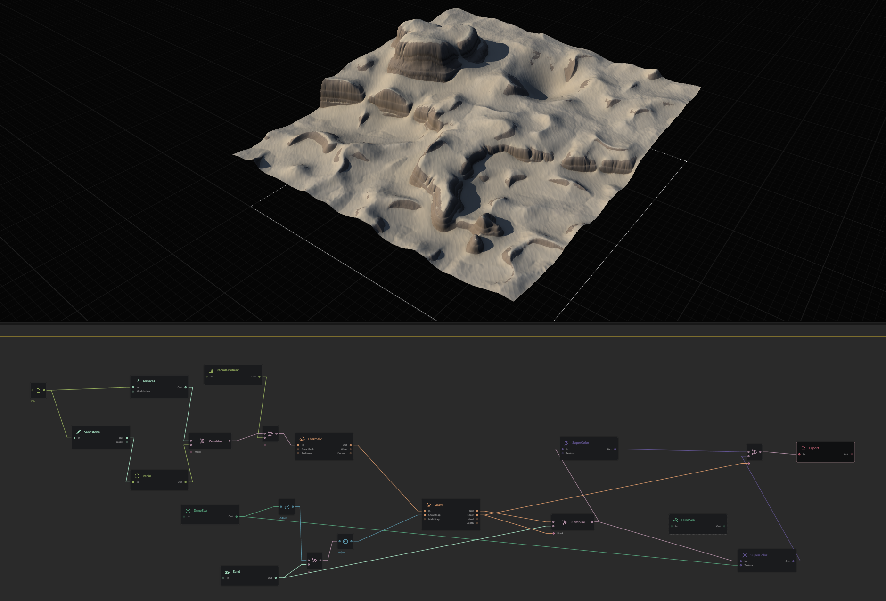
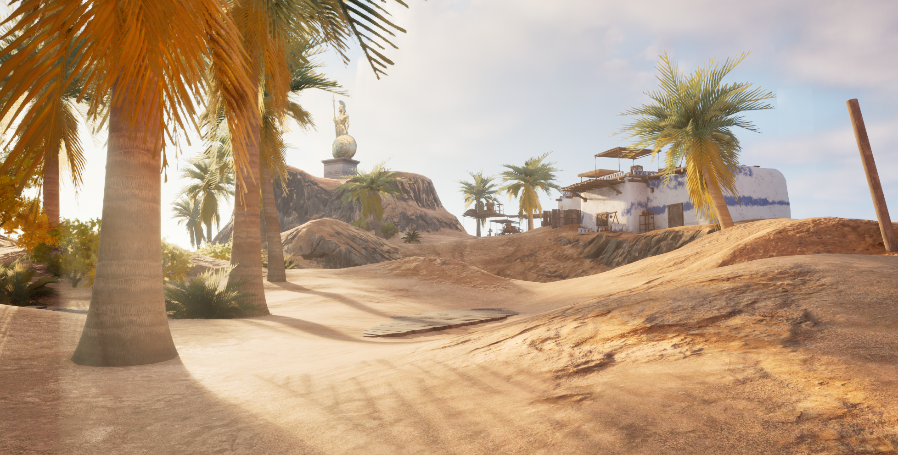

This week marked the final week of the year, which meant it was my last opportunity to complete my
project. I started the week with only my terrain created in World Machine, and by the end, I had
developed a fully detailed environment complete with objects, water, and moving elements. At the
beginning of the week, I made a list of everything I needed to accomplish before submitting my work.
Initially, I thought I would only need to import my terrain and a few assets and write my report.
However, I soon realised this process took much longer than anticipated.
This week, the first practical task I completed was importing my height map from World Machine into
Unreal Engine. I was able to do this quickly because I have done it before. However, after the import, I
realised I wasn’t satisfied with the terrain. It didn’t look realistic, and the texture was off. I spent
quite a bit of time tweaking settings in World Machine. While watching tutorials, I came across another
program called Quadspinner Gaea 2.0. this application was practically the same as World Machine but had
some slightly different functions I used this to add two textures, the sand and the stone. I decided to
do this because when I just had the sand texture, I could have any step angels without the steering
looking out of place and feeling mushy. I pulled through the height map from my world machine. I changed
a few things; the most significant thing I did was change it to a more jagged rocky form, then use the
snow node to add a smooth layer on the top to make the texture look more like sand. I also created an
indent for my lake that I planned to add to Unreal Engine 5.

The visual quality significantly improved after importing the updated terrain into World Machine.
However, I was still unsatisfied with the texture; it was a low-detail bitmap that depended on the
texture from the actual height map. That's when I discovered the MW Landscape Auto Material, which was
quite impressive. It worked similarly to the colouriser in World Machine but provided additional
features, such as pebble textures and a more intricate overall texture. It also included optimisation;
for instance, more detail loads in as you get closer to it. This functionality is particularly useful
because if I decide to sculpt within Unreal Engine 5, the texture will automatically update accordingly.

After this, I made good progress on my project. The next step was adding water, but I encountered much
trouble and frustration. I searched for a tutorial on how to add water to UE5 and found a short YouTube
video. The tutorial recommended using the water plugin; however, it wasn't very helpful because it
didn't clearly explain the process. I spent a few hours trying to get the water feature to work, but
eventually, I figured it out. After that, I could move on to adding assets to my project. I used two
different textures for the ocean and the lake, using free assets from the UE5 marketplace.
After reviewing the required elements for my project, I realised I still needed to add a path and a dry
forest. I searched for free resources on the Unreal Engine Marketplace and 3D models for Blender to find
suitable assets, knowing I could import them into Unreal. Previously, I had added some assets to my
Unreal library, including a Greek island with several components that would be useful for my project.
I imported these assets into my project and integrated them into the environment by strategically placing
them and sculpting the terrain to fit them. Additionally, using this asset pack, I changed the ocean
texture, modified the lighting, and positioned a light source above the statue on the masa to create an
appealing effect.
To create the trail, I used a spline path to connect a line of planks, allowing me to weave it around my
terrain. This method was quite effective because even if the planks did not sit flush against the
ground, I could partially bury them to make it look like the sand had been brushed against them. I also
used a spline path to make the sharks circle the boat in the water.
If I were to redo this project, how would I approach it differently?
While working on this project, I spent hours on something and did not have much to show. I could be
working on one thing for a long time, doing little tweaks and restarting over each time, getting better;
I find a premise this is a good thing to do, although I need to balance perfection within the time
frame. With this product, I spent a lot of time on the simple shape of the terrain without leaving time
for the elements my project required to include. I could work on one thing for ages, trying to make it
perfect, while sometimes it is best to move on with good and work on the other stuff; doing this will
allow me to balance my time since I only have a certain amount of time to complete my task I first need
to get make an ok result that is submittable then if I have the time I can further improve my project
this approach of balancing my time between task will also help with my other classes because I won’t be
spending as much time on the one class. I have found that this often happens when I fixate on one task
and forget about the others and later realise that I need to do those tasks and spend a lot of time on
the other task only to get an ok result and drain even more of my time.
How did my skills with the software improve during this project?
In the past, I have not had the greatest experience learning Unreal Engine 5. However, I completed daily
tasks and used other game-making software, such as Unity, which helped me get into UE5 faster than I
would have otherwise. This familiarity with Unity allowed me to spend less time developing certain
skills I would have needed to learn from scratch.
Regarding the terrain generator, World Machine, I had almost no experience with the software at the
beginning of the semester. However, I spent a week exploring it after seeing it listed in the class
outline. My pre-existing knowledge of nodes from UE5 and Blender also helped me get started quickly.
While these experiences allowed me to begin more efficiently, they did not significantly impact my
overall results because I only knew the basics of these topics.
What was my original vision for the project, and how did it evolve while working on it?
My initial vision for the project was to depict dunes leading into the sea. However, I encountered
difficulties integrating other elements, such as a mesa and a peninsula. Consequently, I revised the
design to feature a rocky landscape with sand, which proved much more effective.
When I started, I was excited to work on a project because I found it far more enjoyable than simply
reading documents. I believe that practical experience is the best way to learn. Initially, I thought my
idea of using World Machine was outdated and that I wouldn’t need to learn it. However, as the week
progressed and I integrated it into Unreal Engine 5—a game engine that can utilise terrain like this—I
discovered its usefulness and capabilities. Even though World Machine is older software, its visual
quality can be enhanced with other tools. The shape of the terrain created with it will remain relevant
for a long time.